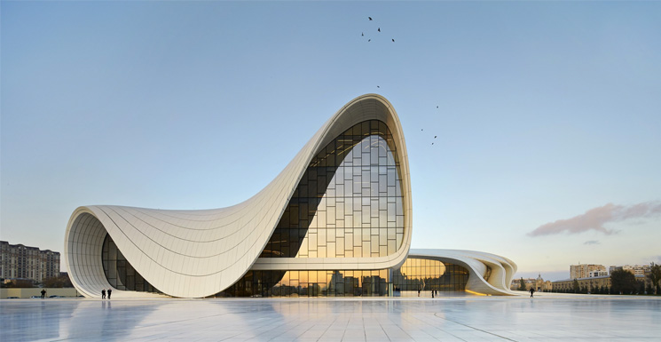

La arquitectura es, en esencia, el arte y la técnica de proyectar y diseñar edificios, espacios y estructuras, enfocándote en el diseño, la creación, la mejora y la restauración de espacios físicos a partir de las necesidades del ser humano.
Los arquitectos son personas capaces de observar los detalles y tienen grandes habilidades para apreciar la naturaleza y la relación e integración de los objetos creados por el ser humano con ese entorno natural. Asimismo, pueden comprender cómo los espacios permiten al ser humano interactuar de distintas maneras.